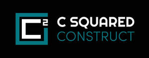
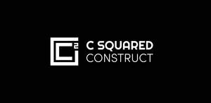
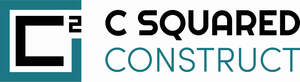

Trade Mark Journal No.2026/012 20 March 2026
UK00004350170 6 March 2026 (37)
Mark 1

Mark 2

Mark 3

- Class 37
- Concreting; Construction consultancy; Installation of utilities in construction sites; Factory construction; Pipeline construction; Providing construction information; Warehouse construction and repair; Rental of construction equipment; Construction equipment rental; Construction equipment (Rental of -); Machinery for use in construction (Rental of -); Rental of machinery [construction]; Rental of construction machinery; Rental of construction and building equipment; Rental of construction plant; Rental of plant for construction; Rental of building construction machinery; Rental of construction machines; Rental of construction apparatus; Services for the rental of machinery for construction; Rental of apparatus for use in the construction of buildings; Leasing of construction equipment; Rental of building equipment; Building equipment (Rental of -); Rental of building machinery; Construction of property; Rental of lifting apparatus for use in construction; Rental of aerial work platforms for use in construction; Services for the rental of machinery for building; Scaffolding rental; Rental of scaffolding; Rental of construction machines and apparatus; Construction; Rental of tools, plant and equipment for construction, demolition, cleaning and maintenance; Residential construction; Property development services [construction]; Building construction and demolition services; Hiring of construction equipment; Building and construction services; Building construction services; Hire of construction machinery; Commercial construction; Construction of residential properties; Residential and commercial building construction; Rental of building apparatus; Rental of machines, tools and apparatus for building construction; Building construction; Building construction and repair; Construction of holiday accommodation; Construction of complexes for business; Rental of excavators; Excavators (Rental of -); Rental of building machines; Construction services; Rental of bulldozers; Bulldozers (Rental of -); Services for the construction of buildings; Construction of private housing; Rental of building tools; Construction of house extensions; Building, construction and demolition; Construction of interior accommodation; Hiring of construction machinery; Construction of buildings; Buildings (Construction of -); Rental of backhoes; Rental of mini-excavators; Rental of automotive machinery for use in excavating; Development of land [construction]; Rental of plant for repair; Infrastructure construction; Building construction consultancy; Building construction supervision services for real estate projects; Hire of construction plant; Cleaning equipment (Rental of -); Rental of cleaning equipment; Hire of construction apparatus; Hydraulic construction services; Temporary structure construction services; Building construction supervision services for building projects; Information concerning rental of equipment for constructions and buildings; Trestles (Rental of -); Road construction; Industrial construction; Custom building construction.
C SQUARED CONSTRUCT LIMITED